Practical AI workflows, learning tools, and human-centered automation projects.
Systems designed to reduce manual work, improve coordination, and support better operational decision-making.
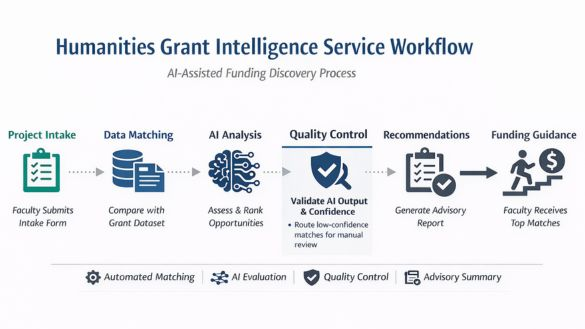
Prototype grant-matching workflow that helps researchers identify relevant humanities funding opportunities through structured intake, dataset matching, and AI-generated advisory summaries.
View Project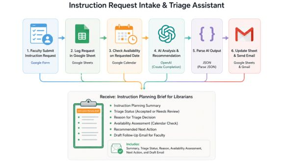
AI-powered workflow that captures faculty instruction requests, evaluates assignment clarity, checks calendar availability, generates instruction planning summaries, and recommends next steps for academic librarians.
View Project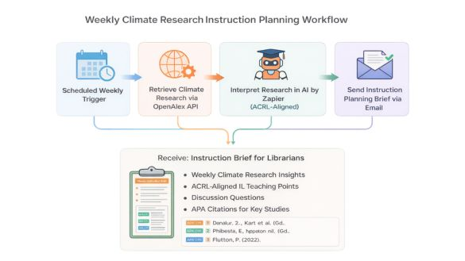
AI-assisted planning workflow that transforms research topics into structured instructional materials, discussion prompts, and classroom-ready teaching support.
View Project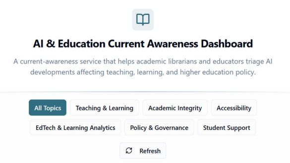
Monitoring dashboard that helps academic teams track AI and higher-education developments, organize updates by topic, and reduce manual scanning.
View Project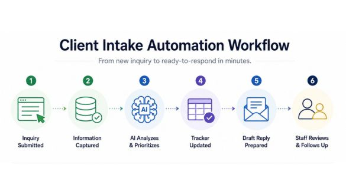
AI-assisted intake workflow that captures new client inquiries, categorizes urgency, generates concise summaries, recommends next steps, and prepares response-ready email drafts for staff review.
View Project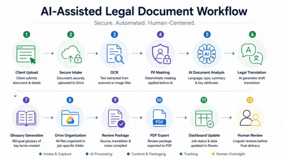
AI-powered legal translation workflow that automates document intake, OCR, PII masking, AI-assisted translation, review package generation, and workflow automation with human oversight.
View Project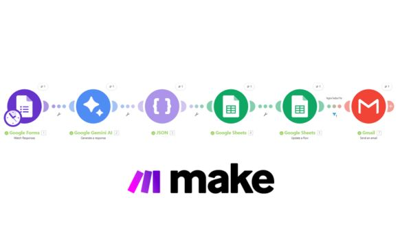
Automated feedback analysis workflow that categorizes customer responses, identifies sentiment patterns, and surfaces actionable insights for faster decision-making.
View Project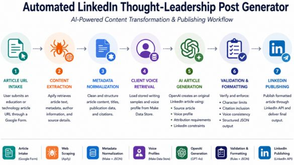
LLM-powered editorial workflow that turns education and technology articles into attribution-aware LinkedIn thought-leadership posts written in a client-specific voice.
View ProjectEducational tools and learning environments that use AI to support exploration, instruction, and user-centered knowledge access.
AI-powered educational companion that helps learners explore Walt Whitman’s life, poetry, and historical context through guided conversation and interactive discovery.
View Project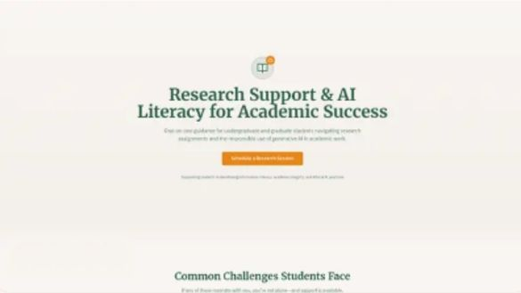
Responsive resource hub designed to help students access research support, AI literacy guidance, and academic success tools in one place.
View Project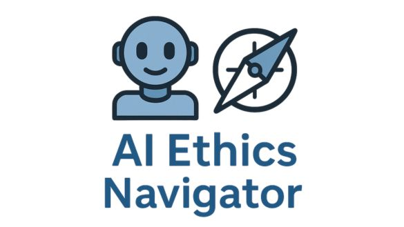
Conversational guide that helps users explore AI ethics concepts, responsible use questions, and practical decision-making scenarios.
View ProjectHuman-centered AI projects focused on memory, narrative, voice, and meaningful digital experiences.
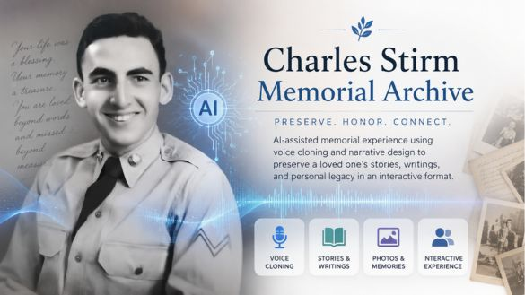
AI-assisted memorial experience using voice cloning and narrative design to preserve a loved one’s stories, writings, and personal legacy in an interactive format.
View Project